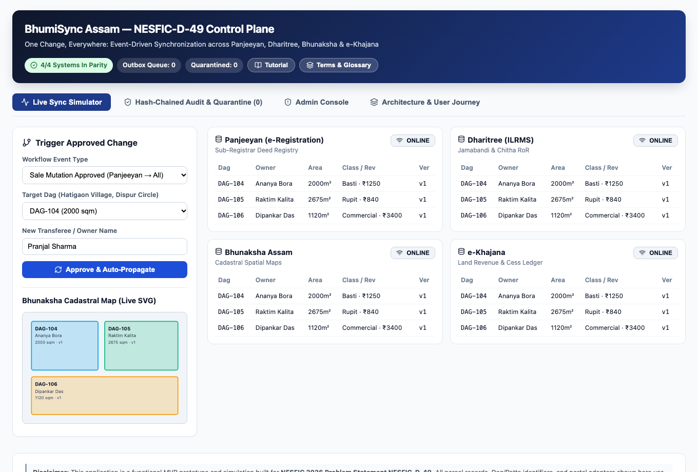

Automatic Event-Driven Synchronisation Across Land Record Systems in Assam (Panjeeyan, Dharitree, Bhunaksha & e-Khajana)
Lead Applicant: Kalyanjit Hatibaruah | Organization: Flugelsoft Labs | Live Prototype: https://bhumisync-assam.pages.dev/
A citizen registers a deed at Panjeeyan, but Dharitree (Jamabandi), Bhunaksha (Map), and e-Khajana (Tax) do not update automatically. Officials re-enter data manually—causing 3–6 week delays, map-vs-record mismatches, and risk of dual-sale fraud.
One approved change at the Sub-Registrar or Circle Officer desk passes automated Area & Rule Checks and propagates simultaneously across all 4 portals in seconds—with a tamper-proof audit trail and zero manual re-entry.
DAG-104 (2,000 m²) to Pranjal at Panjeeyan.
1,200 + 800 = 2,000 m² (no land lost or duplicated).
4/4 Parity.

If Bhunaksha or a Circle server goes OFFLINE, approved changes are never lost. They queue in the Outbox (DEGRADED_RETRY) and auto-reconcile the instant the portal comes back ONLINE.
If a partition area doesn't add up (1200+950 ≠ 2000) or a Dag has a Court-Stay Freeze, BhumiSync blocks propagation and routes it to the Circle Officer Quarantine Desk for manual review.
| Governance Metric | Current Manual Process | BhumiSync Assam Pilot Target |
|---|---|---|
| Mutation-to-Map Sync Lag | 3–6 Weeks (Manual Re-entry) | < 5 Seconds (Automated) |
| Silent Spatial-Textual Mismatches | Frequent / Undetected | 0% (Quarantined for CO Review) |
| Rural Connectivity Outage Loss | Failed Updates / Partial Writes | Zero Loss (Transactional Outbox) |
| Audit & Vigilance Traceability | Scattered Portal Logs | Tamper-Evident Hash-Chained Ledger |
Disclaimer: This MVP prototype and simulation for NESFIC 2026 (NESFIC-D-49) uses synthetic Assam land record fixtures and is not connected to live Government of Assam production databases. © 2026 Flugelsoft Labs. Lead Applicant: Kalyanjit Hatibaruah. Live Prototype: https://bhumisync-assam.pages.dev/